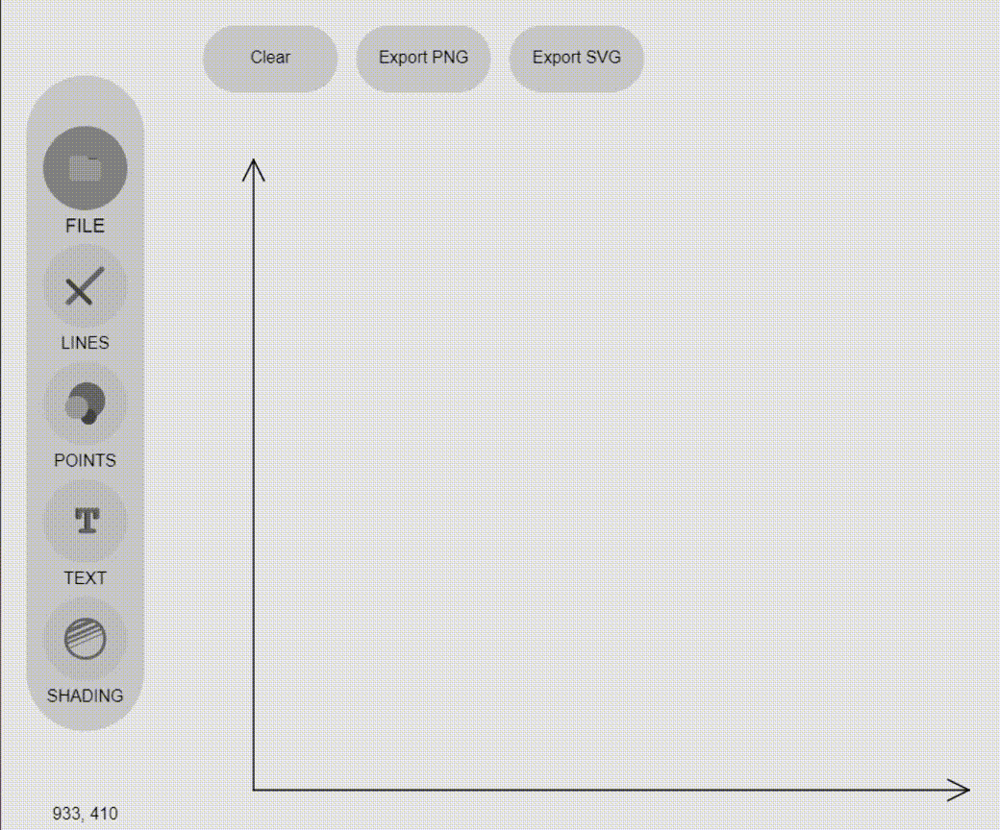
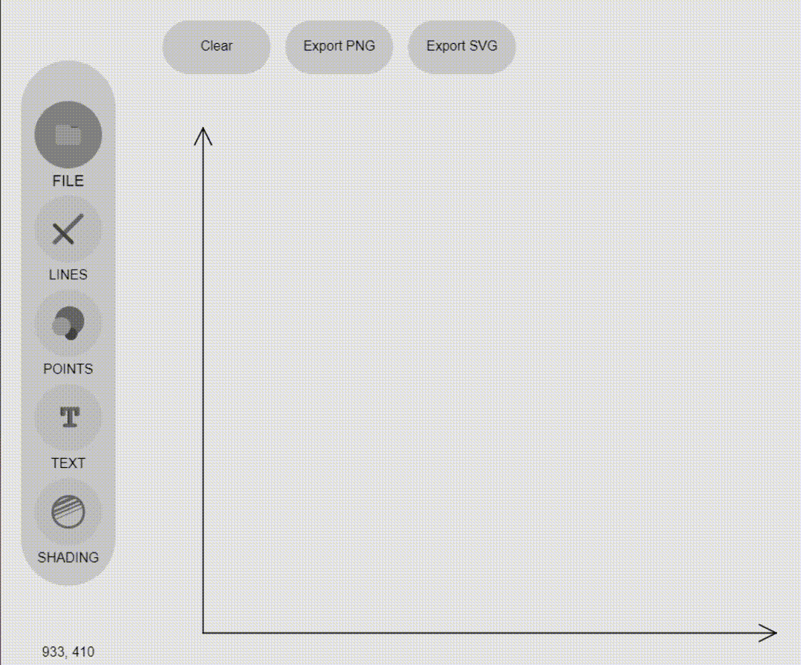
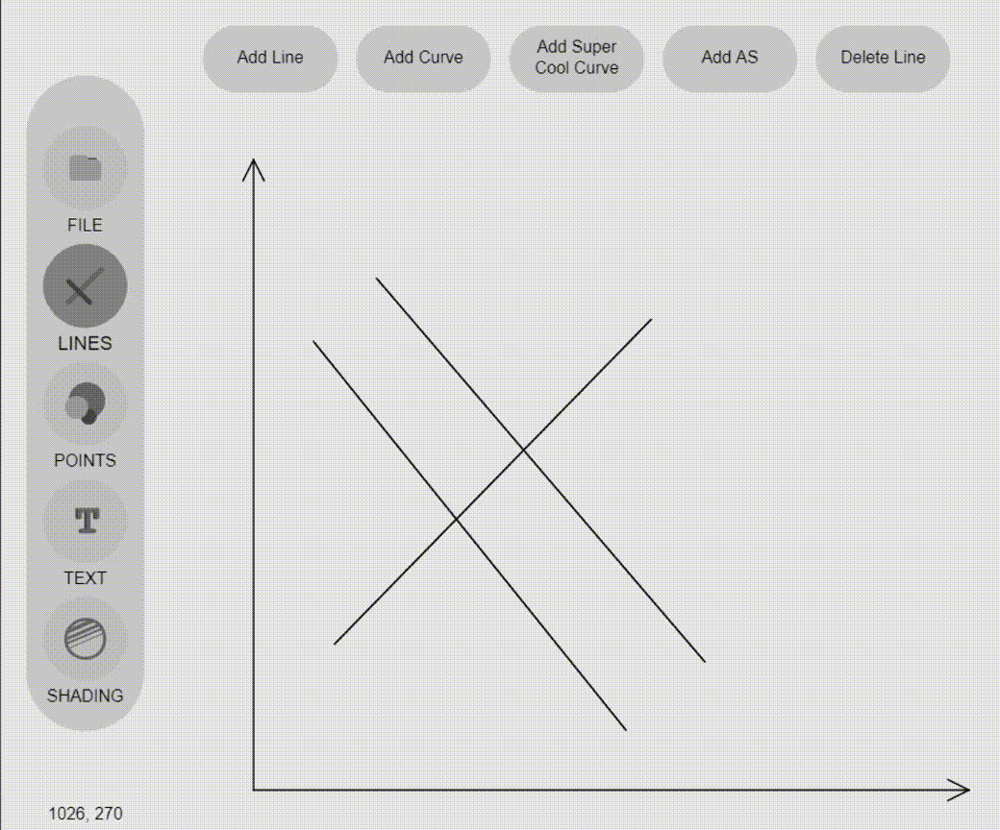
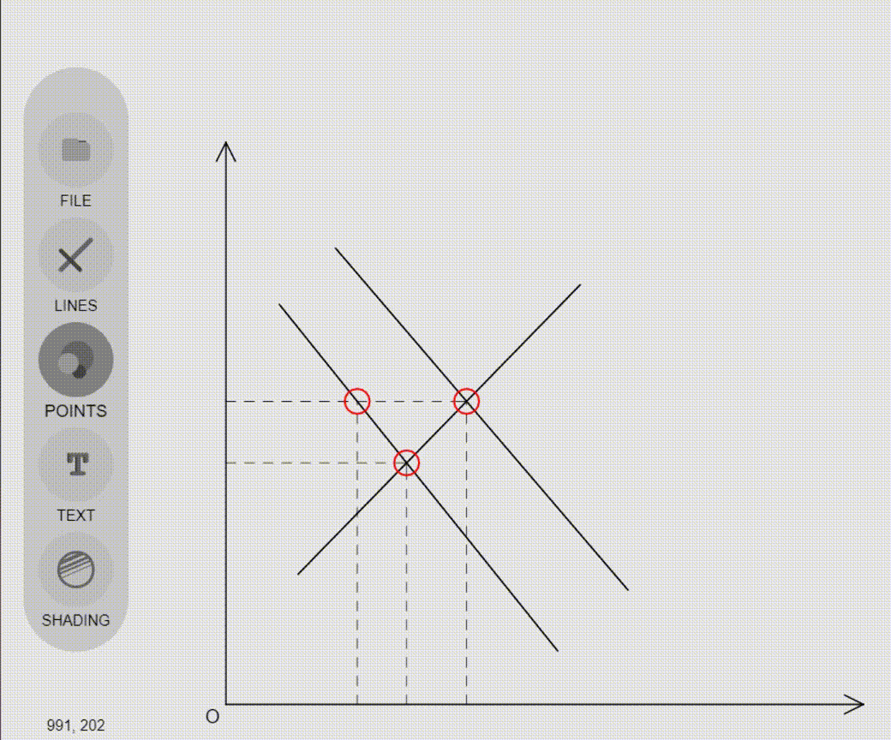
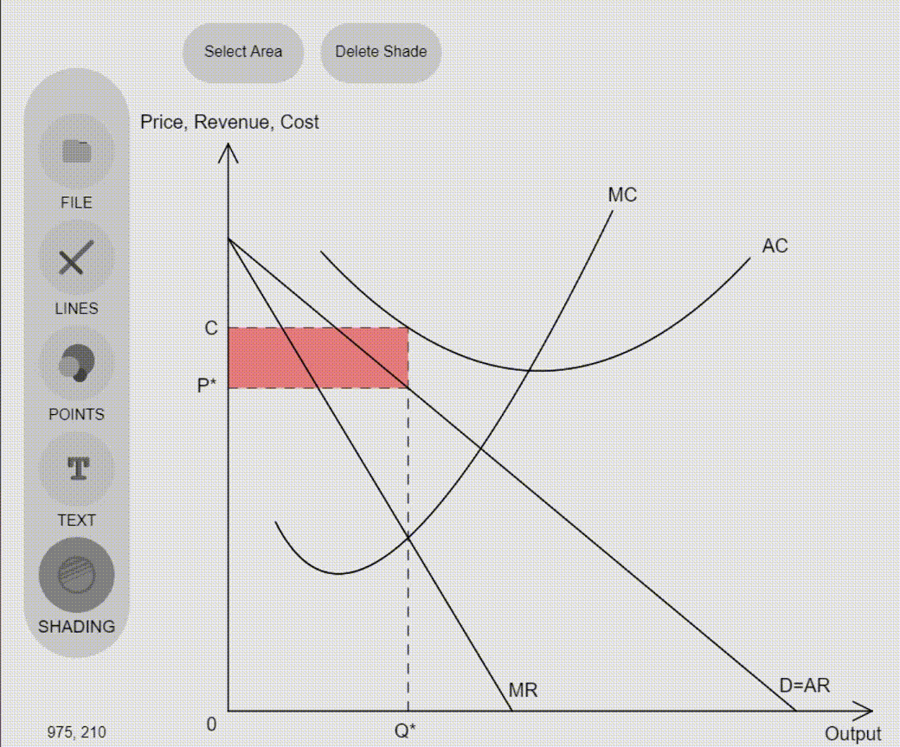
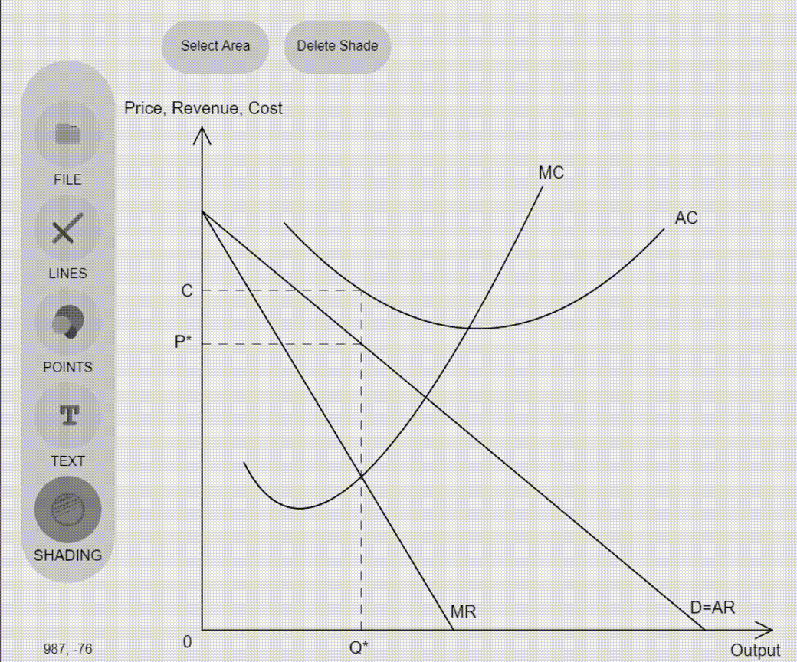

Lines
Add lines to your diagrams
Once a line is highlighted blue, you can move its points around
Click or press DEL to delete
Copy and paste lines with CTRL+C and CTRL+V

Once a line is highlighted blue, you can move its points around
Click or press DEL to delete
Copy and paste lines with CTRL+C and CTRL+V
You may select an intersection between two lines to add dotted lines
Extrapolations of each lines can also be used to find intersections
Click on a dotted line to show or hide it
"Auto Add Text Boxes" tries to add textboxes to points and common places
You can add your own textboxes too
Click "Select Area" and start clicking on points you want to outline your area with
Double-click to finish the fill
Click on the fill to edit its colour
You may save your diagram as a PNG or as an SVG file

To import a diagram into PowerPoint or Word, save it as an SVG, drag it into the document, Right-click and Ungroup it to edit it.